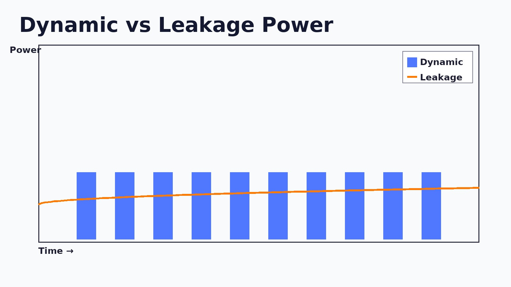
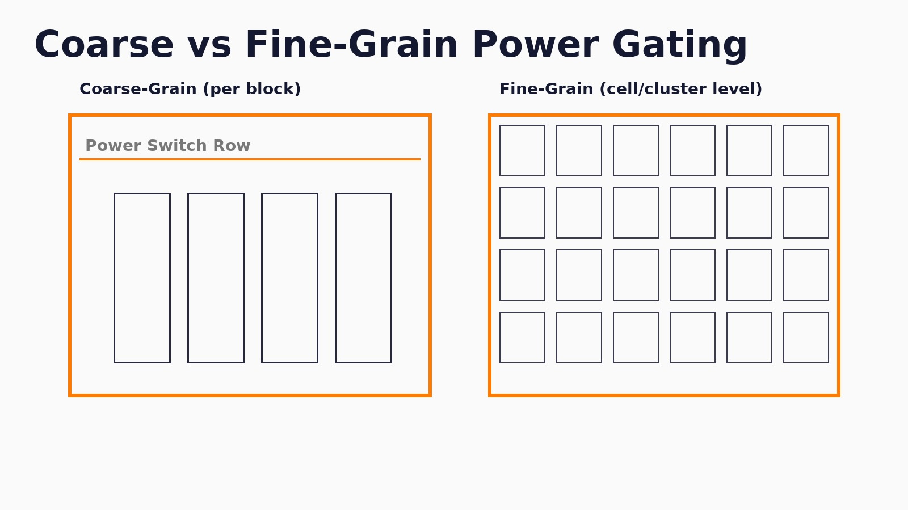
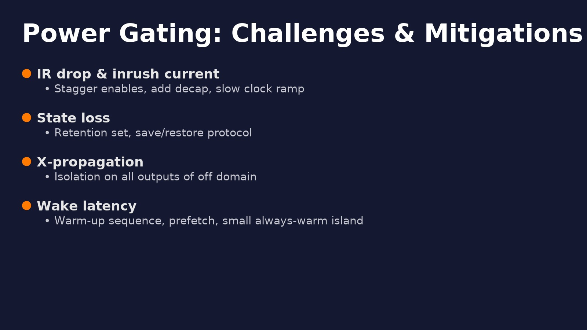

Introduction
Power gating reduces leakage by disconnecting an idle block from the main supply through power switches. It’s a staple of mobile, wearables, and battery-first devices, and increasingly common in servers and AI accelerators. Getting it right blends floorplanning, timing, IR-drop, wake-up sequencing, isolation, and state retention.
Dynamic vs leakage power
Dynamic power (switching) dominates when logic toggles; leakage power dominates when logic sits idle. Power gating targets leakage by turning entire regions fully off.

When should you power gate?
- Blocks remain idle for long enough that leakage energy >> wake-up energy.
- There’s a clean interface to clamp outputs (isolation) when off.
- Wake-up latency fits your product UX and inrush current can be managed.
Impact on subsystems
Typical candidates: video/ISP, AI accelerators, GPU, radios, sensor hubs, and sometimes CPU clusters.
- Always-on stays powered: PMU, RTC, wake controller, key security logic.
- Partially gated: blocks that retain minimal state for quick resume.
- Fully gated: shut off completely and reinitialize on wake.
Principles of power gating
- Power switches (header PMOS or footer NMOS) create a virtual rail
VDD_VIRT. - Isolation cells clamp outputs of the off domain to avoid X-propagation.
- Retention flops preserve critical state on a tiny backup rail.
- Sequencing ensures orderly shutdown and wake-up.
# Power down
assert(save_state) # pulse retention
assert(iso_enable) # clamp domain outputs
deassert(clk_enable) # stop local clocks
deassert(pwrsw_enable) # open switch, domain off
# Power up
assert(pwrsw_enable) # close switch, ramp VDD_VIRT
wait_supply_good # settle; manage inrush with staggering
assert(clk_enable) # restore clocks
deassert(iso_enable) # de-clamp outputs
deassert(save_state) # release retentionFine-grain vs coarse-grain

- Fine-grain: library cells with built-in switches. Pros: granular savings. Cons: area & verification cost.
- Coarse-grain: switch rows around a macro/block. Pros: simpler rails, easier STA/IR. Cons: larger “all-or-nothing” domains.
Design flow & checks
- Partition domains: always-on vs switchable; define retention scope.
- Intent: capture power intent (UPF-like) — supplies, switches, isolation, retention, strategies.
- Floorplan: add switch rows, retention islands, isolation at boundaries; plan straps for virtual rails.
- Timing: MCMM STA includes iso/retention delays and virtual-rail conditions (setup/hold, recovery/removal).
- IR/EM: analyze ramp and steady current; stagger enables; add decap.
- Verification: power-aware sims; X-prop checks; formal for clamp coverage.
Open-source friendly steps
While full UPF sign-off is proprietary, you can still prototype the structure with open tools:
# Pseudo-steps: create global & virtual nets
set ::power_net VDD
set ::ground_net VSS
# create_virtual_pdn VDD_VIRT -from VDD -through switch_rows # conceptually
# Plan switch rows near the gated block (illustrative)
# add_power_switch_row -inst_prefix SW_ -region {x1 y1 x2 y2} -rail VDD_VIRT -control pwrsw_enable
# Straps to feed the virtual rail (illustrative)
# add_pdn_stripe -net VDD_VIRT -layer M5 -width 0.8 -pitch 30 -offset 10read_liberty stdcells_tt.lib
read_verilog top_netlist.v
link_design top
# Iso cell delay modeled in .lib; ensure iso_enable timing is constrained
create_clock -name CORE_CLK -period 2.0 [get_ports clk]
set_clock_gating_check -setup 0.1 -hold 0.1
# Modeled wake-up path checks (recovery/removal on retention/iso)
report_checks -path_delay min_max -fields {slew capacitance} -digits 3These snippets are illustrative to mirror real flows; adapt to your library and PDN scripts.
Challenges & mitigations

- IR drop & inrush: stagger switch enables, add decap, ramp clocks slowly.
- State loss: choose retention set carefully; autosave before power-down.
- X-propagation: isolation on all outbound signals from the off domain.
- Long wake latency: warm caches, prefetch code, or keep a tiny “always-warm” island.
Best practices
- Start with coarse-grain gating for first silicon; refine later.
- Document a single power sequence and test it end-to-end early.
- Track wake energy and latency against UX goals.
- Automate checks: iso coverage, retention coverage, clamp value review.
Glossary
- Isolation cell: forces a safe 0/1 on outputs of an off domain.
- Retention flop: preserves state on a backup rail while domain is off.
- Inrush current: surge when powering a big domain; can brown-out rails.
- Header/footer switch: PMOS/NMOS device that forms the power gate.
Conclusion & next steps
Power gating is the most effective way to kill leakage in idle blocks. The engineering art lives in partitioning, rails, and sequencing. Prototype with open tools, measure wake energy/latency, and move toward a robust sign-off flow as the design matures.
FAQ
Header or footer switches? Either works; PMOS headers leak less, NMOS footers are smaller with better drive.
Do I need retention everywhere? No. Retain only the minimal state to meet resume goals.
How do I limit inrush? Gate enable in phases, add decap, and keep clocks slow during ramp.
You might also like